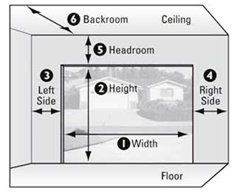

Please use the drawing and instructions below to measure your garage door
Step:1
Please use the drawing and instructions below to measure your garage door
Step:2
Measure for sideroom 3-3/4" is required on each side for installation of vertical track for standard extension spring, standard torsion spring and EZ-Set Torsion Spring System, 5-1/2“ for EZ-SET Extension Spring
Step:3
'Measure area labeled “Headroom“ - distance between the top of the door opening (‘jamb header") and the ceiling (or floor joist). 10" is required for the standard extension spring or EZ-SET Extension Spring System.'12" is required for standard torsion spring and EZ-SET Torsion Spring System. If you have restricted headroom, special hardware is available. Additional headroom is required for installation of an automatic garage door opener. NOTE: if door height extends above the opening, the head-room measurement should be adjusted proportionately.
Step:4
Measure area labeled “Backroom” - distance is measured from thegarage door opening toward the back wall of the garage. Door Heightplus 18" is required. Additional back room may be required for installation of an automatic garage door opener.